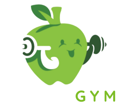

NutryGym · DesktopNutryGym
Your AI-powered nutrition platform
We couldn’t connect to the online platform right now. This desktop app is still available in offline mode.
What can you do?
NutryGym Desktop works as an informational companion app.
Online mode
When the platform is available, the app loads the full web system.
Offline fallback
If the connection fails, you still get a consistent experience.
Unified design
Same colors and UX as the NutryGym web platform.
Desktop ready
Optimized for desktop usage using Electron.